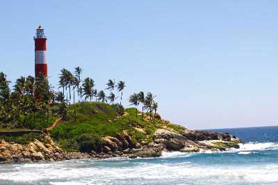

Backwaters in Kozhikode
Spread across long stretches of the Arabian water, these beguiling backwater lagoons are a sight to withhold.

Thikkoti Lighthouse
Located on a rocky shoreline, the place is best known for the scenic views it offers as well as several species of nomadic birds.Said to be built on the remains of a shipwreck.

Beypore
Beypore , an ancient port town in Kozhikode formerly called as Vaypura / Vadaparappanad. The famous ruler of Mysore , Tipu Sultan, named the town "Sultan Pattanam".

Mithai Theravu
A popular hub to gorge on sweet delectables, the Sweet Street is one of the busiest place to shop in Kozhikode. It remains open till 9 in the night.